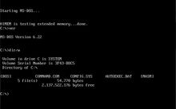

微软磁盘操作系统，是美国微软公司提供的磁盘操作系统。在美国微软公司推出Windows1.0、Windows3.0、1995年8月24日推出的操作系统Windows 95以前，磁盘操作系统是IBM PC及兼容机中的最基本配备，而MS-DOS则是个人电脑中最普遍使用的磁盘操作系统之一。
最基本的MS-DOS系统由一个基于主引导记录(硬盘才有主引导记录，软碟没有主引导记录）启动磁区位于第0轨的磁区中，内容上与硬盘的MBR略有不同的BOOT引导程序和三个文件模块组成。这三个模块是输入输出模块(IO.SYS）、文件管理模块（MSDOS.SYS）及命令解释模块。（不过在MS-DOS 7.0中，MSDOS.SYS被改为启动配置文件，而IO.SYS增加了MSDOS.SYS的功能）除此之外，微软还在零售的MS-DOS系统包中加入了若干标准的外部程序（即外部命令），这才与内部命令一同构建起一个在磁盘操作时代相对完备的人机交互环境。有关MS-DOS的各种命令，请参见MS-DOS命令列表。
- 中文名
- 微软磁盘操作系统
- 外文名
- Microsoft Disk Operating system
- 外语简称
- MS-DOS
- 开发公司
- Microsoft （微软）
目录
- 1 起源
- 2 发展史
- 3 组成
- ▪ IO.SYS模块
- ▪ MSDOS.SYS
- ▪ COMMAND.COM
- ▪ 引导程序
- 4 文件目录
- ▪ 文件概念
- ▪ 文件标识
- ▪ 通配符
- ▪ 树形目录
- 5 命令全集
- ▪ 一、目录操作类命令
- ▪ （一）MD——建立子目录
- ▪ （二）CD——改变当前目录
- ▪ （三）RD——删除子目录命令
- ▪ （四）DIR——显示磁盘目录命令
- ▪ （五）PATH——路径设置命令
- ▪ 二、磁盘操作类命令
- ▪ （一）TREE——显示磁盘目录结构命令
- ▪ （二）DELTREE——删除整个目录命令
- ▪ （三）FORMAT——磁盘格式化命令
- ▪ （四）UNFORMAT恢复格式化命令
- ▪ （五） CHKDSK——检查磁盘当前状态命令
- ▪ （六）DISKCOPY——整盘复制命令
- ▪ （七）LABEL——建立磁盘卷标命令
- ▪ （八）VOL——显示磁盘卷标命令
- ▪ （九）SCANDISK——检测、修复磁盘命令
MS-DOS起源
1980年，西雅图电脑产品公司（Seattle Computer Products）的一名24岁的程序员蒂姆·帕特森（Tim Paterson）花费了四个月时间编写出了86-DOS操作系统。1981年7月，微软以五万美元的代价向西雅图公司购得本产品的全部版权，并将它更名为MS-DOS。
最早在1979年年底，Seattle Computer公司开发了第一款基于8086芯片的操作系统CP/M-86，经过改进后推出了QDOS，并在80年年底推出了86-DOS0.3版，比尔·盖茨以极低的价格买下了86-DOS的销售经营权。1981年4月，Seattle Computer正式发布了86-DOS v1.0版，微软在当年7月，将86-DOS的版权和其他所有权力买断，并将其改名为MS-DOS向市场发布。这是微软赖以发迹的第一个成功的操作系统产品。
最基本的MS-DOS系统由一个基于MBR的BOOT引导程序和三个文件模块组成。这三个模块是输入输出模块（IO.SYS）、文件管理模块（MSDOS.SYS）及命令解释模块。除此之外，微软还在零售的MS-DOS系统包中加入了若干标准的外部程序（即外部命令），这才与内部命令（即由解释执行的命令）一同构建起一个在磁盘操作时代相对完备的人机交互环境。
最初，Windows 1.x/Windows 2.x/Windows 3.x 一直到Windows9x/Me系列都是基于MS-DOS的图形用户界面程序。只有Windows NT系列不需要DOS，但Windows NT在2000年之前并不流行。直到Windows2000(NT 5.0),Windows XP(NT5.1），Windows Vista(NT6）,Windows 7(NT6.1）的诞生，Windows才能真正抛弃MS-DOS。
MS-DOS发展史
1981年，MS-DOS 1.0上市，微软与IBM合作，在IBM销售的P

MS-DOS命令行界面
C上安装DOS进行捆绑发售，支持16k内存及160k的5寸软盘。在硬件昂贵，软件并不为人们所注意的时代，比尔盖茨作为微软的核心人物，相当有远见的抓住了这次绝佳的机会。1982年，支持双面磁盘。
1984年，MS-DOS 3.0增加了对新的IBM AT支持，并开始对部分局域网功能提供支持。
1986年，MS-DOS 3.2 支持了720K 的5寸软盘。
1987年，MS-DOS 3.3 支持了IBM PS/2设备及1.44M的3寸软盘，并支持其他语言的字符集。
1988年，MS-DOS 4.0 增加了DOS Shell 操作环境，并且有一些其他增强功能及更新。
1991年，MS-DOS 5.0发行，增加了DOS Shell功能，增强了内存管理和宏功能。
1993年，MS-DOS 6.x 增加了很多GUI程序，如Scandisk、Defrag、Msbackup等，增加了磁盘压缩功能，增强了对Windows 的支持。
1995年，MS-DOS 7.0 增加了长文件名支持、LBA大硬盘支持。这个版本的DOS并不是独立发售的，而是在Windows 95中内嵌的。之后的MS-DOS 7.1全面支持FAT32分区、大硬盘、大内存支持等，对四位年份支持解决了千年虫问题。
1996年8月，MS-DOS 7.1。（MSDOS7.1的独立版本，即ISO和IMG镜像版本，实际非Microsoft开发，而是由CN-DOS的某些网友们联手开发。加入了扩展功能，并且扩展中包含了天汇汉字处理系统)
2000年，MS-DOS 8.0，MS-DOS的最后一个版本。由于微软看到了Windows的曙光，于是放弃了DOS。[1]
MS-DOS组成
MS—DOS采用模块结构，它由五部分组成：ROM中的BIOS模块、IO．SYS模块、
MSDOS．SYS模块、COMMAND.COM模块和引导程序。
基本输入出模块
互补金属氧化物半导体（CMOS）设置程序和基本输入输出程序（外语缩写：BIOS）。BIOS是一组程序和参数表，其中程序部份是可以通过中断方式调用的一组驱动程序，参数给出外设的地址和参数。BIOS是计算机硬件和操作系统之间的接口，操作系统通过它来管理计算机硬件资源。
MS-DOSIO.SYS模块
IO.SYS是MS—DOS和ROMBIOS之间的接口程序。它和ROM BIOS一起完成系统设备的管理。
MS-DOSMSDOS.SYS
MS-DOSCOMMAND.COM
MS-DOS引导程序
引导程序又叫“引导记录”，其作用是检查当前盘上是否有两个系统文件，若有系统文件则把DOS系统从磁盘装入内存。 一张系统盘上应该包含有：引导记录、IO．SYS、MSDOS．SYS和COMMAND.COM等模块。
MS-DOS文件目录
MS-DOS文件概念
文件是指记录在存储介质（如磁盘、光盘）上的一组相关信息的集合。
MS-DOS文件标识
驱动器号+路径+文件名（1到8个字符）+扩展名（1到3个字符代表文件的类型）
MS-DOS通配符
*代表从该位置起的一个或多个合法字符；?代表所在位置的任一个合法字符。
MS-DOS树形目录
DOS采用树形目录结构。由一个根目录和若干层子目录组成。这种目录结构一是能够解决文件重名问题，即不同的目录可以包含相同的文件名或目录名；二是能够解决文件多而根目录容量有限带来的问题。在查找某个子目录下的一个文件时，要使用目录路径。指定路径有两种方法：绝对路径和相对路径。绝对路径是从根目录开始到文件所在目录的路径。例如要查找UCDOS子目录下的二级子目录DATA下的README．TXT文件，绝对路径为：\UCDOS\DATA。路径中第一个“\”符号代表根目录。相对路径是从当前目录开始到文件所在目录的路径。当前目录指在不特意指定路径情况下DOS命令所处理的目录。例如系统提示符为：“C：\UCDOS\DATA>；”，则DATA是当前目录。
MS-DOS命令全集
MS-DOS一、目录操作类命令
MS-DOS（一）MD——建立子目录
1．功能：创建新的子目录
2．类型：内部命令
3．格式：MD[盘符：][路径名]<；子目录名>
4．使用说明：
⑵“路径名”：要建立的子目录的上级目录名，若缺省则建在当前目录下。
C:\>MD FOX （在当前驱动器C盘下创建子目录FOX）
C:\>MD FOX\USER （在FOX 子目录下再创建USER子目录）
MS-DOS（二）CD——改变当前目录
1．功能：显示当前目录
2．类型：内部命令
4．使用说明：
⑴如果省略路径和子目录名则显示当前目录；
⑵如采用“CD\”格式，则退回到根目录；
⑶如采用“CD..”格式则退回到上一级目录。
C:\>CD FOX 、USER（进入FOX子目录下的USER子目录）
C:\FOX\USER>CD.. （退回上一级根目录）
C:\FOX>CD\ （返回到根目录）
C:\>
MS-DOS（三）RD——删除子目录命令
1．功能：从指定的磁盘删除了目录。
2．类型：内部命令
3．格式：RD[盘符：][路径名][子目录名]
4．使用说明：
⑵不能删除根目录和当前目录。
例：要求把C盘FOX子目录下的USER子目录删除，操作如下：
第一步：先将USER子目录下的文件删空；
C:\>DEL C:\FOX\USER\*.*
第二步，删除USER子目录。
C:\>RD C:\FOX\USER
MS-DOS（四）DIR——显示磁盘目录命令
1．功能：显示磁盘目录的内容。
2．类型：内部命令
3．格式：DIR [盘符：][路径][文件名] [/A[[:]属性]] [/C] [/D] [/L] [/N] [/O[[:]分类属性]] [/P] [/Q] [/S] [/T[[:]时间]] [/W] [/X] [/4]
4． 使用说明：
- /A 显示具有指定属性的文件。
属性：
- /B 使用空格式（没有标题信息或摘要）。
- /D 跟宽式相同，但文件是按栏分类列出的。
- /L 用小写。
- /N 新的长列表格式，其中文件名在最右边。
- /O 用分类顺序列出文件。
分类排序：
N 按名称（字母顺序） S 按大小（从小到大) E 按扩展名（字母顺序） D 按日期/时间（从先到后）
G 组目录优先 - 颠倒顺序的前缀
时间 ：
C 创建时间 A 上次访问时间 W 上次写入的时间
- /W 用宽列表格式。
- /X 显示为非8.3文件名产生的短名称。格式是 /N 的格式，短名称插在长名称前面。如果没有短名称，在其位置则显示空白。
- /4 用四位数字显示年
MS-DOS（五）PATH——路径设置命令
2．类型：内部命令
4．使用说明：
⑵PATH命令中的路径，若有两条以上，各路径之间以一个分号“；”隔开；
⑶PATH命令有三种使用方法：
PATH[盘符1:][路径1][盘符2:][路径2]…（设定可执行文件的搜索路径）
PATH：（取消所有路径）
PATH：（显示当前所设的路径）
MS-DOS二、磁盘操作类命令
MS-DOS（一）TREE——显示磁盘目录结构命令
1．功能：显示指定驱动器上所有目录路径和这些目录下的所有文件名。
2．类型：外部命令
3．格式：TREE[盘符：][/F][>PRN]
4．使用说明：
⑴使用/F参数时显示所有目录及目录下的所有文件，省略时，只显示目录，不显示目录下的文件；
⑵选用>PRN参数时，则把所列目录及目录中的文件名打印输出。
MS-DOS（二）DELTREE——删除整个目录命令
1．功能：将整个目录及其下属子目录和文件删除。
2．类型：外部命令
3．格式：DELTREE[盘符：]<；路径名>
4．使用说明：该命令可以一步就将目录及其下的所有文件、子目录、更下层的子目录一并删除，而且不管文件的属性为隐藏、系统或只读，只要该文件位于删除的目录之下，DELTREE都一视同仁，照删不误。使用时务必小心！！！
MS-DOS（三）FORMAT——磁盘格式化命令
1．功能：对磁盘进行格式化，划分磁道和扇区；同时检查出整个磁盘上有无带缺陷的磁道，对坏道加注标记；建立目录区和文件分配表，使磁盘作好接收DOS的准备。2．类型：外部命令3．格式：FORMAT <；盘符：> [/S][/4][/Q]4．使用说明：⑴命令后的盘符不可缺省，若对硬盘进行格式化，则会如下列提示：WARNING:ALL DATA ON NON ——REMOVABLE DISK DRⅣE C:WILL BE LOST ！
Proceed with Format (Y/N）？
（警告：所有数据在C盘上，将会丢失，确实要继续格式化吗？）
⑵若是对软盘进行格式化，则会如下提示：
Insert mew diskette for drive A;
and press ENTER when ready…
（在A驱中插入新盘，准备好后按回车键）。
⑷选用[/4]参数，在1.2MB的高密度软驱中格式化360KB的低密度盘；
⑸选用[/Q]参数，快速格式化，这个参数并不会重新划分磁盘的磁道貌岸然和扇区，只能将磁盘根目录、文件分配表以及引导扇区清成空白，因此，格式化的速度较快。
MS-DOS（四）UNFORMAT恢复格式化命令
1．功能：对进行过格式化误操作丢失数据的磁盘进行恢复。
2．类型：外部命令
3．格式：UNFORMAT<；盘符>[/L][/U][/P][/TEST]
⑴选用/L参数列出找到的子目录名称、文件名称、大小日期等信息，但不会真的做FORMAT工作。
⑵选用/P参数将显示于屏幕的报告（包含/L参数所产生的信息）同时也送到打印机。运行时屏幕会显示：“Print out will be sent to LPT1”
⑶选用/TEST参数只做模拟试验（TEST）不做真正的写入动作。使用此参数屏幕会显示：“Simulation only”
⑷选用/U参数不使用MIRROR映像文件的数据，直接根据磁盘现状进行UNFORMAT。
⑸选用/PSRTN；修复硬盘分区表。
若在盘符之后加上/P、/L、/TEST之一，都相当于使用了/U参数，UNFORMAT会“假设”此时磁盘没有MIRROR映像文件。
注意：UNFORMAT对于刚FORMAT的磁盘，可以完全恢复，但FORMAT后若做了其它数据的写入，则UNFORMAT就不能完整的救回数据了。UNFORMAT并非是万能的，由于使用UNFORMAT会重建FAT与根目录，所以它也具有较高的危险性，操作不当可能会扩大损失，如果仅误删了几个文件或子目录，只需要利用UNDELETE就够了。
MS-DOS（五） CHKDSK——检查磁盘当前状态命令
1．功能：显示磁盘状态、内存状态和指定路径下指定文件的不连续数目。
2．类型：外部命令
3．格式：CHKDSK [盘符：][路径][文件名][/F][/V]
4．使用说明：
⑴选用[文件名]参数，则显示该文件占用磁盘的情况；
⑵选[/F]参数，纠正在指定磁盘上发现的逻辑错误；
⑶选用[/V]参数，显示盘上的所有文件和路径。
MS-DOS（六）DISKCOPY——整盘复制命令
1．功能：复制格式和内容完全相同的软盘。
2．类型：外部命令
4．使用说明：
⑴如果目标软盘没有格式化，则复制时系统自动选进行格式化。
⑵如果目标软盘上原有文件，则复制后将全部丢失。
⑶如果是单驱动器复制，系统会提示适时更换源盘和目标盘，请操作时注意分清源盘和目标盘。
MS-DOS（七）LABEL——建立磁盘卷标命令
1．功能：建立、更改、删除磁盘卷标。
2．类型：外部命令
3．格式：LABEL [盘符：][卷标名]
4．使用说明：
⑴卷标名为要建立的卷标名，若缺省此参数，则系统提示键入卷标名或询问是否删除原有的卷标名；
⑵卷标名由1至11个字符组成。
MS-DOS（八）VOL——显示磁盘卷标命令
1．功能：查看磁盘卷标号。
2．类型：内部命令
3．格式：VOL [盘符：]
MS-DOS（九）SCANDISK——检测、修复磁盘命令
1．功能：检测磁盘的FAT表、目录结构、文件系统等是否有问题，并可将检测出的问题加以修复。
2．类型：外部命令
4．使用说明：
⑴SCANDISK适用于硬盘和软盘，可以一次指定多个磁盘或选用[/ALL]参数指定所有的磁盘；
⑵可自动检测出磁盘中所发生的交叉连接、丢失簇和目录结构等逻辑上的错误，并加以修复。
MS-DOS（十）DEFRAG——重整磁盘命令
1．。功能：整理磁盘，消除磁盘碎块。
2．类型：外部命令
3．格式：DEFRAG [盘符：][/F]
4．使用说明：选用/F参数，将文件中存在盘上的碎片消除，并调整磁盘文件的安排，确保文件之间毫无空隙。从而加快读盘速度和节省磁盘空间。
MS-DOS（十一）SYS——系统复制命令
1．功能：将当前驱动器上的DOS系统文件IO.SYS,MSDOS.SYS和 传送到指定的驱动器上。
2．类型：外部命令
3．格式：SYS [盘符：]
MS-DOS三、文件操作类命令
MS-DOS（一） COPY文件复制命令
1．功能：拷贝一个或多个文件到指定盘上。
2．类型：内部命令
3．格式：COPY [源盘][路径]<；源文件名> [目标盘][路径][目标文件名]
4．使用说明：
⑴COPY是文件对文件的方式复制数据，复制前目标盘必须已经格式化；
⑵复制过程中，目标盘上相同文件名称的旧文件会被源文件取代；
⑶复制文件时，必须先确定目标般有足够的空间，否则会出现；insufficient的错误信息，提示磁盘空间不够；
⑷文件名中允许使用通配举“*”“?”，可同时复制多个文件；
⑸COPY命令中源文件名必须指出，不可以省略。
⑹复制时，目标文件名可以与源文件名相同，称作“同名拷贝”此时目标文件名可以省略；
⑺复制时，目标文件名也可以与源文件名不相同，称作“异名拷贝”，此时，目标文件名不能省略；
⑻复制时，还可以将几个文件合并为一个文件，称为“合并拷贝”，格式如下：COPY [源盘][路径]<；源文件名1>+<；源文件名2>+…+<；源文件名n> [目标盘][路径]<；目标文件名>；；
⑽注意：COPY命令的使用格式，源文件名与目标文件名之间必须有空格！
MS-DOS（二）XCOPY——目录复制命令
1．功能：复制指定的目录和目录下的所有文件连同目录结构。
2．类型：外部命令
3．格式：XCOPY [源盘：][源路径名]<；源文件名> [目标盘符：][目标路径名]<；源文件名> [/S][/V][/E]
4．使用说明：
⑴XCOPY是COPY的扩展，可以把指定的目录连文件和目录结构一并拷贝，但不能拷贝隐藏文件和系统文件；
⑵使用时源盘符、源目标路径名、源文件名至少指定一个；
⑷选用/V参数时，对的拷贝的扇区都进行较验，但速度会降低。
MS-DOS（三）TYPE——显示文件内容命令
1．功能：显示ASCⅡ码文件的内容。
2．类型：内部命令。
3．格式：TYPE [盘符：][路径]<；文件名>
4．使用说明：
⑴显示由ASCⅡ码组成的文本文件，对。等为扩展名的文件，其显示的内容是无法阅读的，没有实际意义2；
⑵该命令一次只可以显示一个文件的内容，不能使用通配符；
⑶如果文件有扩展名，则必须将扩展名写上；
⑸若需将文件内容打印出来，可用如下格式：
TYPE [盘符：][路径]<；文件名> >PRN
此时，打印机应处于联机状态。
MS-DOS（四） REN——文件改名命令
1．功能：更改文件名称
2．类型：内部命令
3．格式：REN [盘符：][路径]<；旧文件名> <；新文件名>
4．使用说明：
⑵允许使用通配符更改一组文件名或扩展名。
MS-DOS（五）FC——文件比较命令
1．功能：比较文件的异同，并列出差异处。
2．类型：外部命令
3．格式：FC [盘符：][路径名]<；文件名> [盘符：][路径名][文件名][/A][/C][/N]
4．使用说明：
⑴选用/A参数，为ASCⅡ码比较模式；
⑵选用/B参数，为二进制比较模式；
⑶选用/C参数，将大小写字符看成是相同的字符。
⑷选用/N参数，在ASCⅡ码比较方式下，显示相异处的行号。
MS-DOS（六）ATTRIB——修改文件属性命令
1．功能：修改指定文件的属性。（文件属性参见2.5.4（二）文件属性一节）
2．类型：外部命令。
3．格式：ATTRIB [文件名] [+R|-R][+A|-A][+H|-H][+S|-S][/S]
4．使用说明：
⑴选用+R参数，将指定文件设为只读属性，使得该文件只能读取，无法写入数据或删除；选用-R参数，去除只读属性；
⑵选用+A参数，将文件设置为档案属性；选用-A参数，去除档案属性；
⑶选用+H参数，将文件调协为隐含属性；选用-H参数，去隐含属性；
⑷选用+S参数，将文件设置为系统属性；选用-S参数，去除系统属性；
⑸选用/S参数，对当前目录下的所有子目录及作设置。
MS-DOS（七） DEL——删除文件命令
1．功能：删除指定的文件。
2．类型：内部命令
3．格式：DEL [盘符：][路径]<；文件名>[/P]
4．使用说明：
⑴选用/P参数，系统在删除前询问是否真要删除该文件，若不使用这个参数，则自动删除；
⑵该命令不能删除属性为隐含或只读的文件；
⑶在文件名称中可以使用通配符；
⑷若要删除磁盘上的所有文件（DEL*.*或DEL.），则会提示：（Are you sure?）（你确定吗？）若回答Y，则进行删除，回答N，则取消此次删除作业。
MS-DOS（八） UNDELETE——恢复删除命令
1．功能：恢复被误删除命令
2．类型：外部命令。
3．格式：UNDELETE [盘符：][路径名]<；文件名>[/DOS]/LIST][/ALL]
4．使用说明：使用UNDELETE可以使用“*”和“?”通配符。
⑴选用/DOS参数根据目录里残留的记录来恢复文件。由于文件被删除时，目录所记载斩文件名第一个字符会被改为E5，DOS即依据文件开头的E5和其后续的字符来找到欲恢复的文件，所以，UNDELETE会要求用户输入一个字符，以便将文件名字补齐。但此字符不必和原来的一样，只需符合DOS的文件名规则即可。
⑵选用/LIST只“列出”符合指定条件的文件而不做恢复，所以对磁盘内容完全不会有影响。
⑶选用/ALL自动将可完全恢复的文件完全恢复，而不一一地询问用户，使用此参数时，若UNDELTE利用目录里残留的记录来将文件恢复，则会自动选一个字符将文件名补齐，并且使其不与现存文件名相同。
UNDELETE还具有建立文件的防护措施的功能，已超出本课程授课范围，请读者在使用些功能时查阅有关DOS手册。
MS-DOS四、其它命令
MS-DOS（一）CLS——清屏幕命令
1功能：清除屏幕上的所有显示，光标置于屏幕左上角。
2类型：内部命令
3格式：CLS
MS-DOS（二） VER查看系统版本号命令
1功能：显示当前系统版本号
2类型：内部命令
3格式：VER
MS-DOS（三） DATA日期设置命令
1功能：设置或显示系统日期。
2类型：内部命令
3格式：DATE[mm-dd-yy]
4使用说明：
⑴省略[mm-dd-yy]显示系统日期并提示输入新的日期，不修改则可直接按回车键，[mm-dd-yy]为“月-日-年”格式；
⑵当机器开始启动时，有自动处理文件（AUTOEXEC.BAT）被执行，则系统不提示输入系统日期。否则，提示输入新日期和时间。
MS-DOS（四） TIME系统时钟设置命令
1功能：设置或显示系统时期。
2类型：内部命令
3格式：TIME[hh:mm:ss:xx]
4使用说明：
⑴省略[hh:mm:ss:xx]，显示系统时间并提示输入新的时间，不修改则可直接按回车键，[hh:mm:ss:xx]为“小时：分钟：秒：百分之几秒”格式；
⑵启动时，如果AUTOEXEC.BAT被执行，则系统不提示输入系统日期。否则，需要输入新日期和时间。
MS-DOS（五）MEM查看当前内存状况命令
1功能：显示当前内存使用的情况
2类型：外部命令
3格式：MEM[/C][/F][/M][/P]
4使用说明：
⑴选用/C参数列出装入常规内存和CMB的各文件的长度，同时也显示内存空间的使用状况和最大的可用空间；
⑵选用/F参数分别列出当前常规内存剩余的字节大小和UMB可用的区域及大小；
⑶选用/M参数显示该模块使用内存地地址、大小及模块性质；
⑷选用/P参数指定当输出超过一屏时，暂停供用户查看。
MS-DOS（六） MSD显示系统信息命令
1功能：显示系统的硬件和操作系统的状况。
2类型：外部命令
3格式：MSD[/S]
4使用说明：
⑴选用/I参数时，不检测硬件；
⑵选用/B参数时，以黑白方式启动MSD；
⑶选用/S参数时，显示出简明的系统报告。
MS-DOS（七）HELP命令
1．功能：提供有关命令的帮助
2．类型：内部命令
3．格式：help [DOS命令]
MS-DOS五、DOS下常用网络相关命令
MS-DOS（一）Arp：“地址解析协议”地址翻译表
显示和修改“地址解析协议”（ARP) 所使用的到以太网的 IP 或令牌环物理地址翻译
表。该命令只有在安装了 TCP/IP 协议之后才可使用
arp -a [inet_addr] [-N [if_addr]]
arp -d inet_addr [if_addr]
arp -s inet_addr ether_addr [if_addr]
参数
-a 通过询问 TCP/IP 显示当前 ARP 项。如果指定了 inet_addr，则只显示指定计算
机的 IP 和物理地址。
-g 与 -a 相同。
inet_addr 以加点的十进制标记指定 IP地址。
-N 显示由 if_addr 指定的网络界面 ARP 项。
if_addr 指定需要修改其地址转换表接口的 IP 地址（如果有的话）。如果不存在，将使用第
一个可适用的接口。
-d 删除由 inet_addr 指定的项。
-s 在 ARP 缓存中添加项，将 IP 地址 inet_addr 和物理地址 ether_addr 关联。物
理地址由以连字符分隔的 6 个十六进制字节给定。使用带点的十进制标记指定 IP
地址。项是永久性的，即在超时到期后项自动从缓存删除。
ether_addr 指定物理地址。
（二）Finger显示有关用户的信息
（二）Finger在运行 Finger 服务的指定系统上显示有关用户的信息。根据远程系统输出不同的变
量。该命令只有在安装了 TCP/IP 协议之后才可用。
finger [-l] [user]@computer[...]
参数
-l 以长列表格式显示信息。
@computer
（三）Ftp传送文件
将文件传送到正在运行 FTP 服务的远程计算机或从正在运行 FTP 服务的远程计算机
传送文件（有时称作 daemon）。Ftp 可以交互使用。单击“相关主题”列表中的
ftp 子环境运行时，它由 ftp 命令提示符代表。
ftp [-v] [-n] [-i] [-d] [-g] [-s:filename] [-a] [-w:windowsize] [computer]
参数
-v 禁止显示远程服务器响应。
-n 禁止自动登录到初始连接。
-i 多个文件传送时关闭交互提示。
-d 启用调试、显示在客户端和服务器之间传递的所有 ftp 命令。
-g 禁用文件名组，它允许在本地文件和路径名中使用通配符字符（* 和）。（请参阅
联机“命令参考”中的 glob 命令。）
-s: filename 指定包含 ftp 命令的文本文件；当 ftp 启动后，这些命令将自动运行。该参数中
不允许有空格。使用该开关而不是重定向 (>；）。
-a 在捆绑数据连接时使用任何本地接口。
-w:windowsize 替代默认大小为 4096 的传送缓冲区。
computer 指定要连接到远程计算机的计算机名或 IP 地址。如果指定，计算机必须是行的最
后一个参数。
（四）NbtstatTCP/IP 协议诊断命令
该诊断命令使用 NBT（TCP/IP 上的 NetBIOS）显示协议统计和当前 TCP/IP 连
接。该命令只有在安装了 TCP/IP 协议之后才可用。nbtstat [-a remotename] [-A IP address] [-c] [-n] [-R] [-r] [-S] [-s] [interval]
参数
-a remotename 使用远程计算机的名称列出其名称表。
-A IP address 使用远程计算机的 IP 地址并列出名称表。
-c 给定每个名称的 IP 地址并列出 NetBIOS 名称缓存的内容。
-n 列出本地 NetBIOS 名称。“已注册”表明该名称已被广播 (Bnode) 或者 WINS（其
他节点类型）注册。
-R 清除 NetBIOS 名称缓存中的所有名称后，重新装入 Lmhosts 文件。
-r 列出 Windows 网络名称解析的名称解析统计。在配置使用 WINS 的 Windows
2000 计算机上，此选项返回要通过广播或 WINS 来解析和注册的名称数。
-S 显示客户端和服务器会话，只通过 IP 地址列出远程计算机。
称。
interval 重新显示选中的统计，在每个显示之间暂停 interval 秒。按 CTRL+C 停止重新
显示统计信息。如果省略该参数，nbtstat 打印一次当前的配置信息。
（五）Netstat显示协议统计和当前的 TCP/IP 网络连接
显示协议统计和当前的 TCP/IP 网络连接。该命令只有在安装了 TCP/IP 协议后
才可以使用。
netstat [-a] [-e] [-n] [-s] [-p protocol] [-r] [interval]
参数
-a 显示所有连接和侦听端口。服务器连接通常不显示。
-e 显示以太网统计。该参数可以与 -s 选项结合使用。
-n 以数字格式显示地址和端口号（而不是尝试查找名称）。
-s 显示每个协议的统计。默认情况下，显示 TCP、UDP、ICMP 和 IP 的统计。-p 选
项可以用来指定默认的子集。
-p protocol 显示由 protocol 指定的协议的连接；protocol 可以是 tcp 或 udp。如果与 -
s选项一同使用显示每个协议的统计，protocol 可以是 tcp、udp、icmp 或ip。
-r 显示路由表的内容。
interval 重新显示所选的统计，在每次显示之间暂停 interval 秒。按 CTRL+B 停止重新
显示统计。如果省略该参数，netstat 将打印一次当前的配置信息。
（六）Ping验证与远程计算机的连接
验证与远程计算机的连接。该命令只有在安装了 TCP/IP 协议后才可以使用。
ping [-t] [-a] [-n count] [-l length] [-f] [-i ttl] [-v tos] [-r count] [-s count] [[-j computer-list] | [-k computer-list]] [-w timeout] destination-list
参数
-t Ping 指定的计算机直到中断。-a 将地址解析为计算机名。
n count 发送 count 指定的 ECHO 数据包数。默认值为 4。
-l length 发送包含由 length 指定的数据量的 ECHO 数据包。默认为 32 字节；最大值是
65,527。
-i ttl 将“生存时间”字段设置为 ttl 指定的值。
-v tos 将“服务类型”字段设置为 tos 指定的值。
-r count 在“记录路由”字段中记录传出和返回数据包的路由。count 可以指定最少 1 台，
最多 9 台计算机。
-j computer-list 利用 computer-list 指定的计算机列表路由数据包。连续计算机可以被中
-w timeout 指定超时间隔，单位为毫秒。
destination-list 指定要 ping 的远程计算机。
（七）Rcp系统之间复制文件
在 Windows 2000 计算机和运行远程外壳端口监控程序rshd 的系统之间复制文
件。rcp 命令是一个连接命令，从 Windows 2000 计算机发出该命令时，也可以
用于其他传输在两台运行 rshd 的计算机之间复制文件。rshd 端口监控程序可以
在 UNⅨ 计算机上使用，而在 Windows 2000 上不能使用，所以 Windows 2000
计算机仅可以作为发出命令的系统参与。远程计算机必须也通过运行 rshd 提供
rcp 实用程序。
rcp [-a | -b] [-h] [-r] source1 source2 ... sourceN destination
参数
-a 指定 ASCⅡ 传输模式。此模式在传出文件上将回车/换行符转换为回车符，在传
入文件中将换行符转换为回车/换行符。该模式为默认的传输模式。-b 指定二进制图像传输模式。没有执行回车/换行符转换。
-h 传输 Windows 2000 计算机上标记为隐藏属性的源文件。如果没有该选项，在
rcp 命令行上指定隐藏文件的效果与文件不存在一样。
-r 将源的所有子目录内容递归复制到目标。source 和 destination 都必须是目
录，虽然即使源不是目录，使用 -r 也能够工作。但将没有递归。
source 和 destination
格式必须为 [computer[.user]:]filename。如果忽略了 [computer[.user]:] 部分，计算机将假定为本地计算机。如果省略了 [.user] 部分，将使用当前登录的 Windows 2000 用户名。如果使用了完全合格的计算机名，其中包含句点 (.) 分隔符，则必须包含 [.user]。否则，计算机名的最后部分将解释为用户名。如果指定了多个源文件，则 destination 必须是目录。
如果文件名不是以 UNⅨ 的正斜杠 (/) 或Windows 2000系统的反斜杠 (\) 打头，则假定相对于当前的工作目录。在 Windows 2000 中，这是发出命令的目录。在远程系统中，这是远程用户的登录目录。句点（.）表示当前的目录。在远程路径中使用转义字符（\、"或'），以便在远程计算机中使用通配符。
（八）RexecREXEC 服务的远程计算机上运行命令
rexec computer [-l username] [-n] command
参数
computer 指定要运行 command 的远程计算机。
-l username 指定远程计算机上的用户名。
-n 将 rexec 的输入重定向到 NULL。
command 指定要运行的命令。
（九）Route控制网络路由表
控制网络路由表。该命令只有在安装了 TCP/IP 协议后才可以使用。
route [-f] [-p] [command [destination] [mask subnetmask] [gateway] [metric costmetric]]
参数
命令前清除。
-p 该参数与 add 命令一起使用时，将使路由在系统引导程序之间持久存在。默认情况下，系统重新启动时不保留路由。与 print 命令一起使用时，显示已注册的持久路由列表。忽略其他所有总是影响相应持久路由的命令。
command 指定下列的一个命令。
命令目的 print 打印路由
add 添加路由
delete 删除路由
change 更改现存路由
255.255.255.255。
gateway 指定网关。
名为 Networks 的网络数据库文件和名为 Hosts 的计算机名数据库文件中均引用全部 destination 或 gateway 使用的符号名称。如果命令是 print 或 delete，目标和网关还可以使用通配符，也可以省略网关参数。
metric costmetric 指派整数跃点数（从 1 到 9999）在计算最快速、最可靠和（或）最便宜的
路由时使用。
（十）Rsh远程计算机上运行命令
在运行 RSH 服务的远程计算机上运行命令。该命令只有在安装了 TCP/IP 协议后才可以使用。
rsh computer [-l username] [-n] command
参数
computer 指定运行 command 的远程计算机。
-n 将 rsh 的输入重定向到 NULL。
command 指定要运行的命令。
（十一）Tftp传输文件
将文件传输到正在运行 TFTP 服务的远程计算机或从正在运行 TFTP 服务的远
程计算机传输文件。该命令只有在安装了 TCP/IP 协议后才可以使用。tftp [-i] computer [get | put] source [destination]
参数
如果省略了-i，文件将以ASCⅡ模式传送。这是默认的传送模式。此模式将EOL字符转换为UNⅨ的回车符和个人计算机的回车符/换行符。在传送文本文件时应使用此模式。如果文件传送成功，将显示数据传输率。
computer指定本地或远程计算机。
put将本地计算机上的文件destination传送到远程计算机上的文件source。
get将远程计算机上的文件destination传送到本地计算机上的文件source。
如果将本地计算机上的文件file-two传送到远程计算机上的文件file-one，请指定put。如果将远程计算机上的文件file-two传送到远程计算机上的文件file-one，请指定get。因为tftp协议不支持用户身份验证，所以用户必须登录，并且文件在远程计算机上必须可以写入。
source指定要传送的文件。如果本地文件指定为-，则远程文件在stdout上打印出来
（如果获取），或从stdin（如果放置）读取。
destination指定将文件传送到的位置。如果省略了destination，将假定与source同名。
（十二）Tracert诊断实用程序
该诊断实用程序将包含不同生存时间（TTL）值的Internet控制消息协议（ICMP）回显数据包发送到目标，以决定到达目标采用的路由。要在转发数据包上的TTL之前至少递减1，必需路径上的每个路由器，所以TTL是有效的跃点计数。数据包上的TTL到达0时，路由器应该将“ICMP已超时”的消息发送回源系统。Tracert先发送TTL为1的回显数据包，并在随后的每次发送过程将TTL递增1，直到目标响应或TTL达到最大值，从而确定路由。路由通过检查中级路由器发送回的“ICMP已超时”的消息来确定路由。不过，有些路由器悄悄地下传包含过期TTL值的数据包，而tracert看不到。
tracert [-d] [-h maximum_hops] [-j computer-list] [-w timeout] target_name
参数
/d 指定不将地址解析为计算机名。
-h maximum_hops 指定搜索目标的最大跃点数。
-j computer-list 指定沿 computer-list 的稀疏源路由。
-w timeout 每次应答等待 timeout 指定的微秒数。
target_name 目标计算机的名称。
DOS下恢复上5次注册表命令
Scanreg/restore
MS-DOS查木马
开始→运行→输入CMD，点击确定进入，将此（netstat -an）括号里面的命令复制进CMD窗口中，然后回车运行。
分为这四个部分：
proto（连接方式）、local address（本地连接地址）、foreign address（和本地建立连接的地址）、state（当前端口状态）。通过这个命令的详细信息，我们就可以查出计算机到底有没被安装木马，有没有被什么程序监控，从而来维护自己系统的安全。
- 参考资料
-
- 1. MS-DOS ． 维基百科,自由的百科全书．2014年2月10日 [引用日期2014年2月10日 ]
词条标签：
V百科往期回顾


- 1 起源
- 2 发展史
- 3 组成
- 3.1 IO.SYS模块
- 3.2 MSDOS.SYS
- 3.3 COMMAND.COM
- 3.4 引导程序
- 4 文件目录
- 4.1 文件概念
- 4.2 文件标识
- 4.3 通配符
- 4.4 树形目录
- 5 命令全集
- 5.1 一、目录操作类命令
- 5.2 （一）MD——建立子目录
- 5.3 （二）CD——改变当前目录
- 5.4 （三）RD——删除子目录命令
- 5.5 （四）DIR——显示磁盘目录命令
- 5.6 （五）PATH——路径设置命令
- 5.7 二、磁盘操作类命令
- 5.8 （一）TREE——显示磁盘目录结构命令
- 5.9 （二）DELTREE——删除整个目录命令
- 5.10 （三）FORMAT——磁盘格式化命令
- 5.11 （四）UNFORMAT恢复格式化命令
- 5.12 （五） CHKDSK——检查磁盘当前状态命令
- 5.13 （六）DISKCOPY——整盘复制命令
- 5.14 （七）LABEL——建立磁盘卷标命令
- 5.15 （八）VOL——显示磁盘卷标命令
- 5.16 （九）SCANDISK——检测、修复磁盘命令
- 5.17 （十）DEFRAG——重整磁盘命令
- 5.18 （十一）SYS——系统复制命令
- 5.19 三、文件操作类命令
- 5.20 （一） COPY文件复制命令
- 5.21 （二）XCOPY——目录复制命令
- 5.22 （三）TYPE——显示文件内容命令
- 5.23 （四） REN——文件改名命令
- 5.24 （五）FC——文件比较命令
- 5.25 （六）ATTRIB——修改文件属性命令
- 5.26 （七） DEL——删除文件命令
- 5.27 （八） UNDELETE——恢复删除命令
- 5.28 四、其它命令
- 5.29 （一）CLS——清屏幕命令
- 5.30 （二） VER查看系统版本号命令
- 5.31 （三） DATA日期设置命令
- 5.32 （四） TIME系统时钟设置命令
- 5.33 （五）MEM查看当前内存状况命令
- 5.34 （六） MSD显示系统信息命令
- 5.35 （七）HELP命令
- 5.36 五、DOS下常用网络相关命令
- 5.37 （一）Arp：“地址解析协议”地址翻译表
- 6 查木马